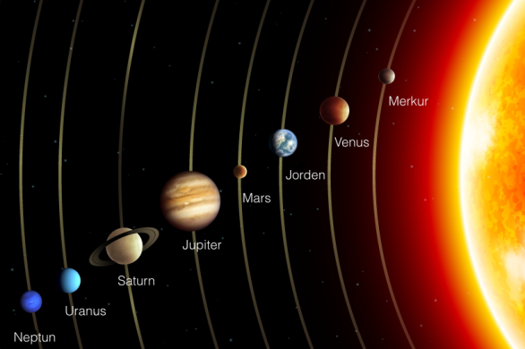

Solsystemet består av Solen og alle legemer og stoff som holdes fast av Solens gravitasjonskraft. Solsystemet består nærmere bestemt av én stjerne – Solen, de åtte store planetene med måner, de fem dvergplanetene og et stort antall asteroider, kometer og meteoroider og interplanetarisk støv og gass.
Alle planetene beveger seg i nesten samme plan, kalt ekliptikken, og i direkte retning, altså mot urviseren. De fleste månene beveger seg også i direkte retning og i planetenes ekvatorplan. Objektene i solsystemet beveger seg i elliptiske baner med Solen i det ene brennpunktet.
